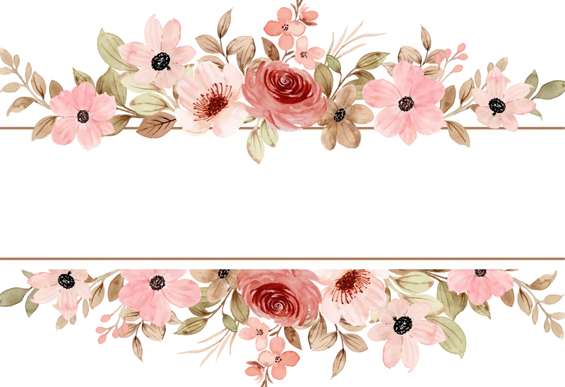
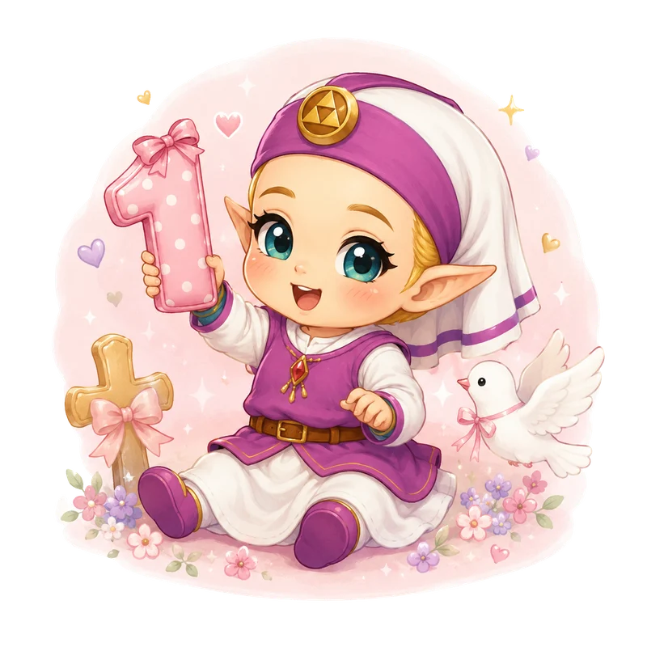
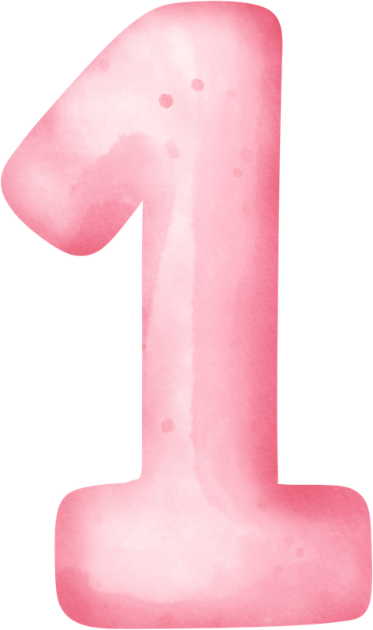
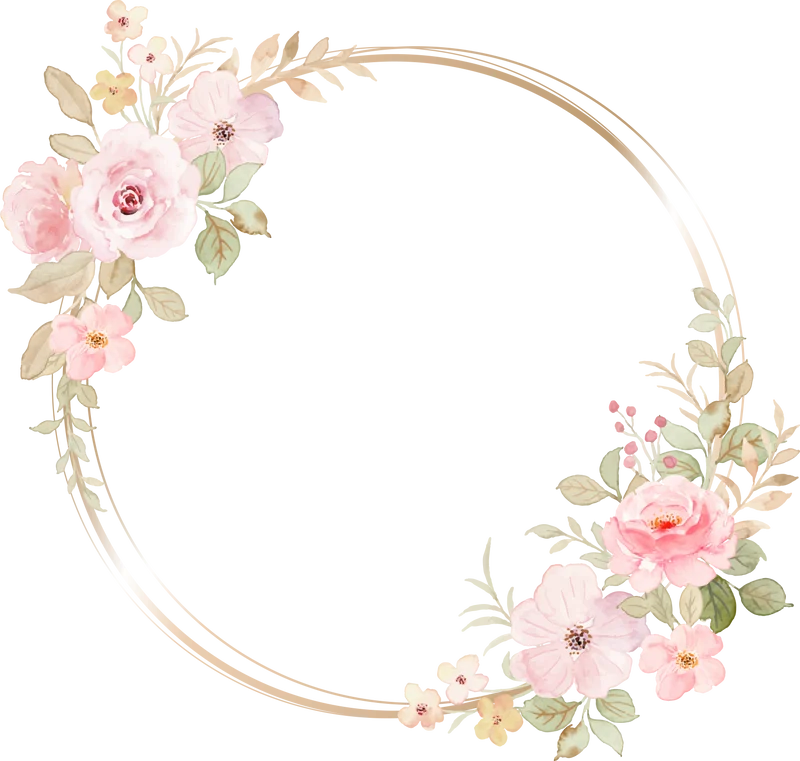
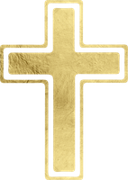
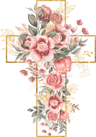
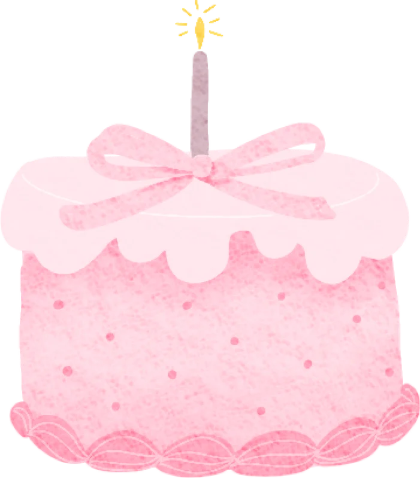
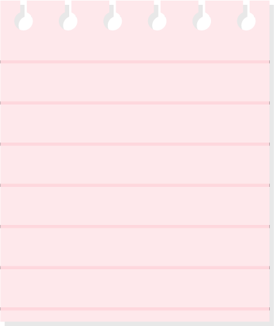

Acompañanos a
celebrar mi

Añito
&
Bautizo


Agradezco a:
Mis padres
Verónica García Guzmán
&
Yeshua David Ortega Marcial
Por esperarme con tanto amor
Mi madrina
Angelous Marjorie
Ortega Marcial
Por guiarme en el camino de la fé


Domingo
26
Julio
Iglesia de
San Judas tadeo
Cam. Antiguo a Naolinco 3,
Campo de Tiro, 91107.
12:00 PM

Salón Chispas
de color
Calle Jose de Alvarado,
Av. Cdad. de las Flores 33 Colonia,
Ruben Pabello Acosta, 91113

Su compañía es lo
más preciado para
mí; si deseas tener
un detalle, aquí dejo
unas opciones
Talla:
18 a 24 Meses
Escribe tu nombre (Min. 6 letras) para confirmar asistencia
Confirmar Asistencia